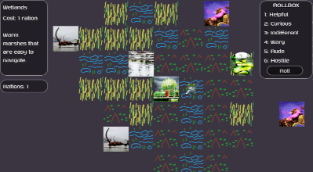

Frog Sci-fi Zine Explorer
I never really figured how to do turn based action in a way that I was happy with, which makes anything in the genre too big to do much with and therefore relegated to Experiements. This one was inspiried by the massive cottage industry of TTRPGs, especially solo and journaling ones. You roll to make the map as you go. The creatures and places are stock photos or photos I took (and a still from video of an otter eating) that are modified to have a 'zine' look - grainy, fewer colours, etc. I guess it's supposed to be a sci-fi version of low budget travel journalling. Images of places are square and over saturated for a kind of holographic-polaroid look, and the map tiles are in a purely holographic style. The protagonist was going to be a frog and other small creatures, and travel is easiest in more watery terrains. It's largely meant to feel like the Pacific Northwest in winter. The sound effects are all recorded by me or family and are undeniably wet.